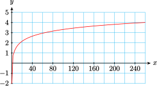
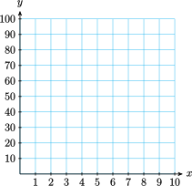
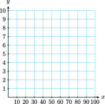
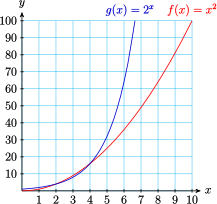
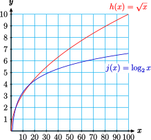

Section 5.2 Logarithmic Functions
Subsection 1. Estimate logs
Subsubsection Examples
It is useful to be able to estimate mentally the value of a log.
Example 5.14.
Write each log equation in exponential form. Then use trial and error to estimate the log between two integers.
- \(\displaystyle \log_2 6=x\)
- \(\displaystyle \log_2 24=x\)
- \(\displaystyle \log_2 100=x\)
- \(\displaystyle \log_2 0.3=x\)
- \(2^x=6.~\) Because \(~2^2=4~\) and \(~2^3=8\text{,}\) \(~2 \lt x \lt 3\text{.}\)
- \(2^x=24.~\) Because \(~2^4=16~\) and \(~2^5=32\text{,}\) \(~4 \lt x \lt 5\text{.}\)
- \(2^x=100.~\) Because \(~2^6=64~\) and \(~2^7=128\text{,}\) \(~6 \lt x \lt 7\text{.}\)
- \(2^x=0.3.~\) Because \(~2^{-2}=\dfrac{1}{4} = 0.25~\) and \(~2^{-1}=\dfrac{1}{2} = 0.5\text{,}\) \(~-2 \lt x \lt -1\text{.}\)
Example 5.15.
Use computing technology to complete the table for \(f(x)=5^x~\text{.}\) Round the function values to tenths.
\(x\) \(2.0\) \(2.1\) \(2.2\) \(2.3\) \(2.4\) \(2.5\) \(2.6\) \(2.7\) \(2.8\) \(2.9\) \(3.0\) \(f(x)\) \(\) \(\) \(\) \(\) \(\) \(\) \(\) \(\) \(\) \(\) \(\) Use your table from part (a) to make a table of values for the function \(g(x) = \log_5 x\text{.}\)
\(~x~\) \(~~~~\) \(~~~~\) \(~~~~\) \(~~~~\) \(~~~~\) \(~~~~\) \(~~~~\) \(~~~~\) \(~~~~\) \(~~~~\) \(~~~~\) \(g(x)\) \(\) \(\) \(\) \(\) \(\) \(\) \(\) \(\) \(\) \(\) \(\)
\(x\) \(2.0\) \(2.1\) \(2.2\) \(2.3\) \(2.4\) \(2.5\) \(2.6\) \(2.7\) \(2.8\) \(2.9\) \(3.0\) \(f(x)\) \(25\) \(29.4\) \(34.5\) \(40.5\) \(47.6\) \(55.9\) \(65.7\) \(77.1\) \(90.6\) \(106.4\) \(125\) \(x\) \(25\) \(29.4\) \(34.5\) \(40.5\) \(47.6\) \(55.9\) \(65.7\) \(77.1\) \(90.6\) \(106.4\) \(125\) \(g(x)\) \(2.0\) \(2.1\) \(2.2\) \(2.3\) \(2.4\) \(2.5\) \(2.6\) \(2.7\) \(2.8\) \(2.9\) \(3.0\)
Subsubsection Exercises
Notebook 5.16.
Write each log equation in exponential form. Then use trial and error to estimate the log, first between two integers, and then to the nearest tenth.
- \(\displaystyle \log_3 10=x\)
- \(\displaystyle \log_3 20=x\)
- \(\displaystyle \log_3 150=x\)
- \(\displaystyle \log_3 0.5=x\)
- \(3^x = 10,~\) between 2 and 3, \(~2.1\)
- \(3^x = 20,~\) between 2 and 3, \(~2.7\)
- \(3^x = 150,~\) between 4 and 5, \(~4.6\)
- \(3^x = 0.5,~\) between \(-1\) and 0, \(~-0.6\)
Notebook 5.17.
Use computing technology to complete the table for \(f(x)=4^x~\text{.}\)
\(x\) \(-1\) \(-0.5\) \(0\) \(0.5\) \(1\) \(1.5\) \(2\) \(2.5\) \(3\) \(3.5\) \(4.0\) \(f(x)\) \(\) \(\) \(\) \(\) \(\) \(\) \(\) \(\) \(\) \(\) \(\) Use your table from part (a) to make a table of values for the function \(g(x) = \log_4 x\text{.}\)
\(~x~\) \(~~~~\) \(~~~~\) \(~~~~\) \(~~~~\) \(~~~~\) \(~~~~\) \(~~~~\) \(~~~~\) \(~~~~\) \(~~~~\) \(~~~~\) \(g(x)\) \(\) \(\) \(\) \(\) \(\) \(\) \(\) \(\) \(\) \(\) \(\) -
Use your table from part (b) to make a graph of \(g(x) = \log_4 x\text{.}\)

\(x\) \(-1\) \(-0.5\) \(0\) \(0.5\) \(1\) \(1.5\) \(2\) \(2.5\) \(3\) \(3.5\) \(4.0\) \(f(x)\) \(0.25\) \(0.5\) \(1\) \(2\) \(4\) \(8\) \(16\) \(32\) \(64\) \(128\) \(256\) \(~x~\) \(0.25\) \(0.5\) \(1\) \(2\) \(4\) \(8\) \(16\) \(32\) \(64\) \(128\) \(256\) \(g(x)\) \(-1\) \(-0.5\) \(0\) \(0.5\) \(1\) \(1.5\) \(2\) \(2.5\) \(3\) \(3.5\) \(4.0\) - 
Subsection 2. Use function notation
A log function is the inverse of the exponential function with the same base, and vice versa.
Subsubsection Examples
Example 5.18.
\(f(x)=\log_6 x\)
- What is \(~f^{-1}(x)\text{?}\)
- Evaluate and simplify \(~f\left(f^{-1}(4)\right)\)
- Evaluate and simplify \(~f^{-1}\left(f(5)\right)\)
- \(\displaystyle ~f^{-1}(x) = 6^x\)
- \(\displaystyle ~f(f^{-1}(4)) = f(6^4) = \log_6 (6^4) = 4\)
- \(\displaystyle ~f^{-1}(\log_6 5) = 6^{\log_6 5} = 5\)
Example 5.19.
For each function \(~f(x)~\text{,}\) decide whether \(f(a+b)=f(a)+f(b)\text{.}\)
- \(\displaystyle f(x)=3^x\)
- \(\displaystyle f(x)=\log_3 x\)
-
\(f(a+b)=3^{a+b},~\) and \(~f(a)+f(b) = 3^a+3^b.~\)
But \(~3^{a+b}~\) is not equivalent to \(~3^a+3^b;~\) in fact \(~3^{a+b} =3^a \cdot 3^b.\)
So for this function, \(f(a+b) \not= f(a)+f(b)\text{.}\)
-
\(f(a+b)=\log_3 (a+b),~\) and \(~f(a)+f(b) = \log_3 a +\log_3 b.~\)
But \(~\log_3 (a+b)~\) is not equivalent to \(~\log_3 a +\log_3 b;~\) in fact \(~\log_3 (ab) = \log_3 a +\log_3 b.\)
So for this function, \(f(a+b) \not= f(a)+f(b)\text{.}\)
Subsubsection Exercises
Notebook 5.20.
\(h(x)=\log_4 x.~\) Evaluate if possible.
- \(\displaystyle h(4)\)
- \(\displaystyle h^{-1}(4)\)
- \(\displaystyle h(0)\)
- \(\displaystyle h^{-1}(0)\)
- \(\displaystyle 1\)
- \(\displaystyle 256\)
- undefined
- \(\displaystyle 1\)
Notebook 5.21.
\(q(x)=9^x.~\) Evaluate if possible.
- \(\displaystyle q\left(\dfrac{1}{2}\right)\)
- \(\displaystyle q^{-1}(3)\)
- \(\displaystyle q(0)\)
- \(\displaystyle q^{-1}(0)\)
- \(\displaystyle 3\)
- \(\displaystyle \dfrac{1}{2}\)
- \(\displaystyle 1\)
- undefined
Notebook 5.22.
\(g(x)=5^x~\text{.}\) Evaluate and simplify if possible.
- \(\displaystyle g(3+t)\)
- \(\displaystyle g(3t)\)
- \(\displaystyle 125 \cdot 5^{t}\)
- \(\displaystyle 125^t\)
Notebook 5.23.
\(f(x)=\log_8 x~\text{.}\) Evaluate and simplify if possible.
- \(\displaystyle f(64p)\)
- \(\displaystyle f(64+p)\)
- \(\displaystyle 2+\log_8 p\)
- cannot be simplified
Subsection 3. Graph log functions
One way to graph a log function is to first make a table of values for its inverse function, the exponential function with the same base, then interchange the variables.
Subsubsection Exercise
Notebook 5.24.
-
Complete the table of values and graph on the same grid: \(~f(x)=x^2~\) and \(~g(x)=2^x~\)
\(~~~x~~~\) \(~~~0~~~\) \(~~~1~~~\) \(~~~2~~~\) \(~~~3~~~\) \(~~~4~~~\) \(~~~5~~~\) \(~~~6~~~\) \(~~~8~~~\) \(~~10~~~\) \(~f(x)~\) \(\) \(\) \(\) \(\) \(\) \(\) \(\) \(\) \(\) \(~g(x)~\) \(\) \(\) \(\) \(\) \(\) \(\) \(\) \(\) \(\)  -
Use your tables from part (a) to graph \(~h(x)=\sqrt{x}~\) and \(~j(x)=\log_2 x~\) on the same grid.

- 
- 